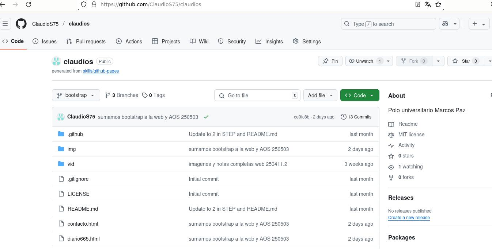
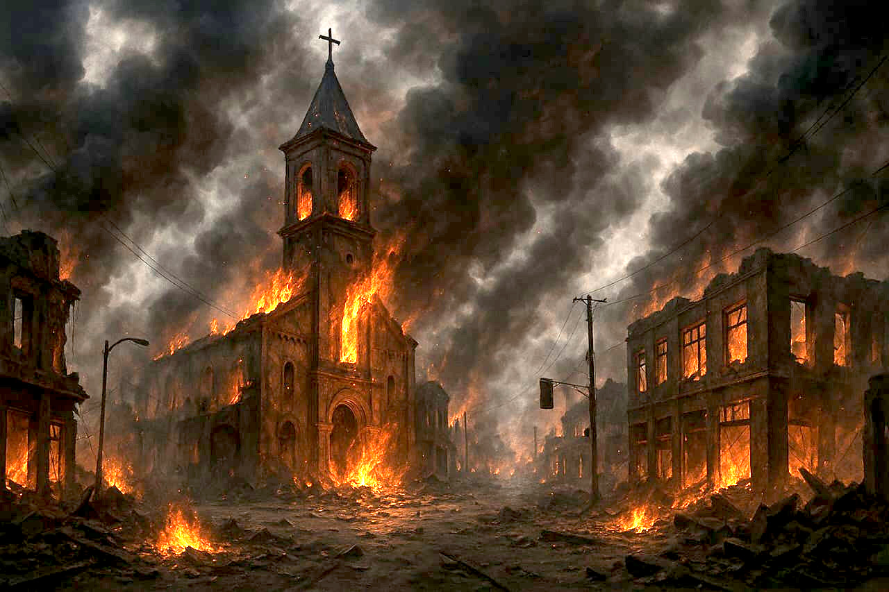
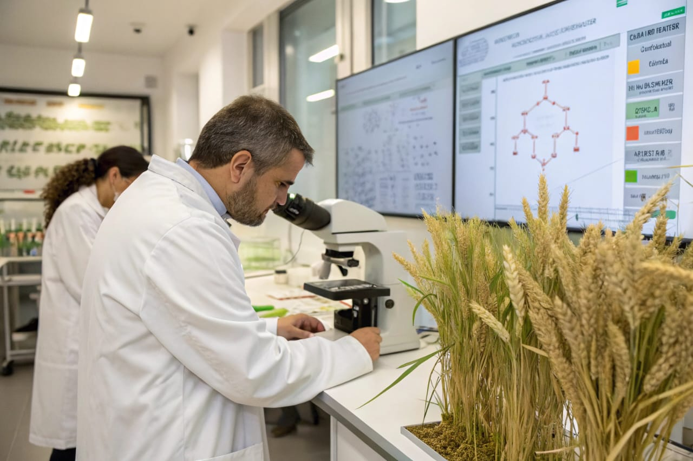
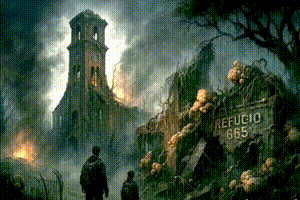
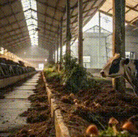

Polo universitario Marcos Paz - Universidad Nacional del Oeste
Programacion web1 - Claudio segura

¿De que se trata la maqueta a presentar?
El presente maquetado pretende utilizar y abordar todos los items visto en clase con el profesor. Aondar en HTML y estilos CSS vistos en clase.
Si bien no se utilizara empaquetados externos vistos en clases como flexbox y fonts, tratare de utlizizar los estilos y fonts que esten a mi alcance y sean de mi agrado para utilizar.

La historia o tema de la maqueta
La maqueta tendra como tema principal una historia distopica basada entre los años 2023 a 2036 situada finalmente en 2036. Ademas la idea es que este basada en el sitio donde esta el Polo de Marcos Paz, con noticias de diarios para dar un poco del contexto del origen y el problema al que se enfrentan los personajes.
ir a los recortes de diarios...Los puntos o matices que veremos
La web tendra tres partes o secciones:
- El diario: Donde se tratan temas o reportes actuales del refugio.
- La historia: Historia del propio refugio, ya que hubo un quiebre del mismo.
- Recortes de diarios: Lo que tratara de armar la historia y aparición del problema.

El problema que se plantea
Una Multinacional "Monsantino" crea un cultivo a partit de mutaciones geneticas en Argentina.
El mismo es comercializado en todo America y luego exportado a todo el mundo.
La genetica del producto comienza a afectar a otros cultivos, luego insectos y animales para finalmente pasar a humanos. Creando un problema alimenticio a nivel global donde se crean zonas seguras llamadas refugios.
Hay varios refugios, pero nos centraremos en el refugio de Marcos Paz.

Estética y tono
La estetica y tono sera del tipo post-apocalipsis rural, con tecnología de baja escala (molinos de viento, radios a válvula, armamento improvisado), y un ambiente de paranoia donde el peligro no siempre viene del exterior...
Monsantino creara NovaGreen y dara el Origen del Brote NovaGreen-12 o Nova
Origen: A comienzos de 2023, la empresa biotecnológica Monsantino lanzó al mercado argentino una nueva variedad de trigo híbrido, denominado NovaGreen-12, promocionado como una solución definitiva contra plagas rurales y capaz de adaptarse a cambios climáticos extremos. Lo que pocos sabían era que este desarrollo utilizaba un hongo modificado genéticamente, derivado del Ophiocordyceps unilateralis, famoso por su capacidad de manipular insectos hospedadores.
La modificación consistía en hacer al hongo simbiótico con el trigo, para que repeliera naturalmente a los parásitos. Funcionó... por un tiempo. Pero el hongo, increíblemente adaptable, empezó a mutar. Resistía pesticidas, sobrevivía a heladas e incluso lograba mantenerse viable después de la cocción.
Para 2025, los primeros síntomas en humanos comenzaron a reportarse: ardores, irritación extrema en mucosas y un extraño estado de agitación en quienes consumían pan, galletas u otros productos con NovaGreen. Lo que parecía una intoxicación alimentaria pronto escaló. Las convulsiones, la agresividad extrema y los ataques descontrolados se hicieron comunes. Las víctimas dejaban heridas profundas y sangrantes que también resultaban infecciosas.
La infección pasó de animales a humanos con facilidad. Mamíferos domésticos se volvieron agresivos. Gallinas se autodevoraban en corrales. Vacas saltaban cercas como si estuvieran poseídas. Y los primeros humanos infectados fueron encerrados… pero no por mucho tiempo....

Historia del Refugio 665 (Marcos Paz)
Contare cómo se fundó y donde se construyó, aprovechando un viejo centro de logística y laboratorio alimenticio de la zona, con galpones enormes, fácil acceso al campo, y una red de túneles subterráneos que conectaban con otras empresas de la zona.
Fue improvisado por un grupo de Mitirates profecionales, científicos, militares retirados y familias locales que decidieron quedarse y resistir en lugar de huir.
Tambien voy a aundar en lo que era el refugio y en el incidente por filtracion del Hongo en el mismo y como lograron superarlo. Dando asi una segunda oportunidad y con ello menos personajes y personas en el refugio.

Personajes clave
Dra. Emma Rinaldi: ex microbióloga de una universidad nacional de Buenos Aires que descubrió una mutación del hongo, y que se activa con feromonas humanas. Está obsesionada con encontrar una cura, incluso si eso implica probar con personas....
Simón Varela: líder actual del Refugio, un ex policía de la zona, habil en telecomunicaciones y electronica, respetado pero con métodos discutibles.
Lola: una niña que nació en el refugio y parece tener una inmunidad natural al hongo. Se sospecha que su madre fue expuesta al Nova mientras estaba embarazada y logro superar el incidente.
Diario del refugio
Sera una zona, donde los personajes revelaran algunos conflictos internos:
Peleas por los recursos: no todos quieren seguir cultivando orgánicamente, hay quien plantea arriesgarse y salir a robar a otros.
Tensiones entre generaciones: los jóvenes quieren salir del refugio y explorar, los mayores quieren mantener el aislamiento.
Un grupo disidente: que anela tomar el control del Refugio y buscar comunicación con los refugios perdidos, incluso usando tecnologías prohibidas.
Dar pistas de los Misterios de la exploración:
Hay rumores de un “Refugio Central” al sur, que tiene acceso a tecnología avanzada, energía limpia y una cura parcial.
Exploradores del Refugio 665 salen cada tanto a buscar víveres y noticias, pero algunos no regresan, y otros vuelven cambiados, más agresivos...